一位被奴役、转交，并重新命名的纳瓦女性。
她约生于 1500 年，原名没有留下。1519 年受洗后，西班牙记录称她为玛丽娜夫人。
00时间的女儿 · 003
LA MALINCHE / MALINTZIN / DOÑA MARINA
谁背叛了
背叛者？
她是被转卖的女孩、掌握多种语言的翻译者、征服军中的外交行动者， 也是数百年后被写成“背叛”的民族象征。
沿着三个名字开始 ↓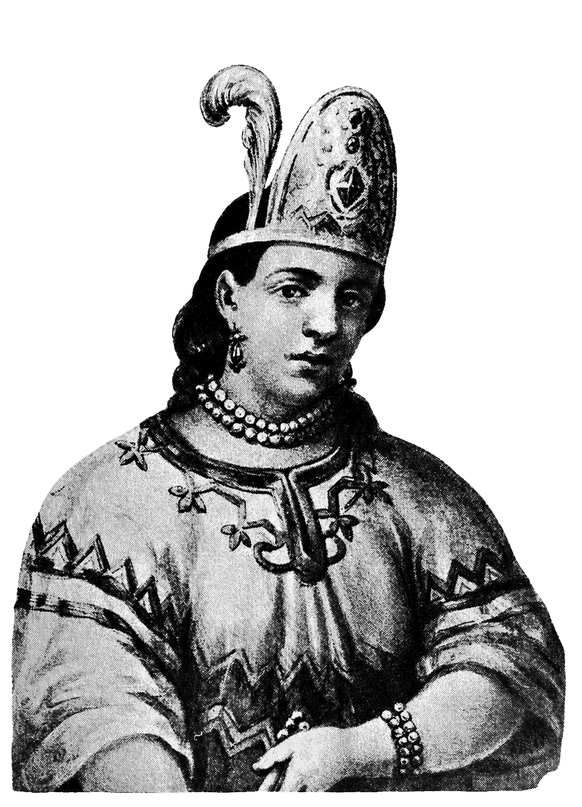
01一个人 · 三个名字
每个名字都来自一套权力关系：出生的世界、受洗后的秩序，以及后世替她制造的意义。
三个名字同时保留：她不是三个互相取代的符号，而是一个在不同权力关系中不断被重新命名的人。
02先认识她
先把人物和时代放回原位，再讨论她是否“背叛”。
她约生于 1500 年，原名没有留下。1519 年受洗后，西班牙记录称她为玛丽娜夫人。
纳瓦特尔语、玛雅语与西班牙语经由她相接；谈判、停战、结盟与命令因此能够跨越边界。
本站区分她造成的实际影响、她所受的强迫，以及后世把集体历史压成一个女人罪名的过程。
03阅读坐标
由现存记录、时间线与多方材料相互支持。
面对冲突或不足的证据，保留“可能”。
组织因果的讲述方式，不替代私人证词。
名字、断裂、湖面与红线构成当代设计语言。
把十六世纪初的中部美洲理解成现代民族国家，会让“背叛”这个判断从一开始就站错位置。
城邦、附庸、贡赋与竞争关系层层相叠。不同纳瓦语群体不会天然拥有同一个政治忠诚。
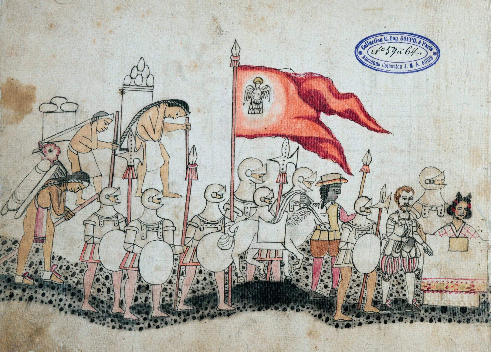
05阿兹特兰 · 纳瓦 · 墨西加
“阿兹特克”是后世常用的总称；“墨西加”更具体地指向建立特诺奇蒂特兰的群体。 三城同盟通过战争与贡赋扩大控制，却没有抹去地方政治。
“纳瓦人”“墨西加人”“阿兹特克帝国”与现代墨西哥国族不是同义词。
06约 1500 · 奥卢塔
她大约出生于今天墨西哥湾沿岸附近。具体年份、地点与出生名都无人知晓。 西班牙记录称她出身于地方贵族家庭，但这些记载本身也带着征服者的视角。
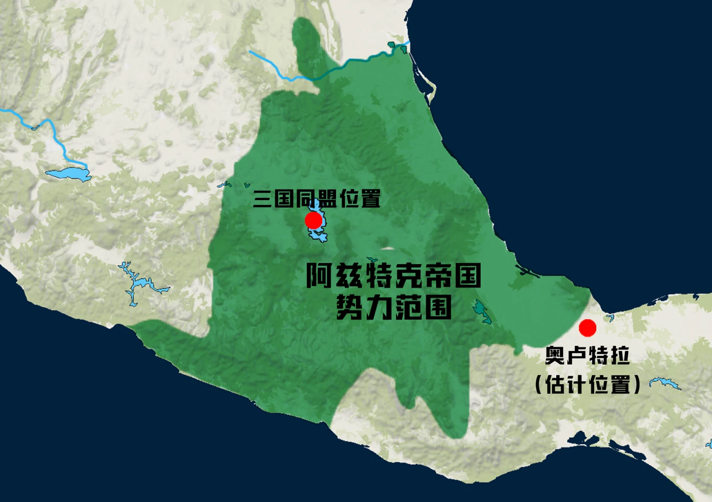
边缘不是空白：这里连接纳瓦语与玛雅语世界，也连接贡赋网络、海岸贸易与地方权力。
07失去的出生名
08第一次背叛
史料给出不同故事，现存证据不足以让其中一种完全胜出。
一种叙述称母亲再婚后，为保护新家庭的继承，把她交给了商人。这个故事流传最广，却也可能经过道德化整理。
另一种解释把她放进地方战争、政治交换或贡赋网络中。无论哪一种成立，她都不是自由选择离开家园。
09被迫南下的路线
她可能先被带到重要贸易节点希卡兰戈，后来又进入玛雅语世界的波顿查恩。 地理位移同时切断了亲族、身份与原有语言环境。
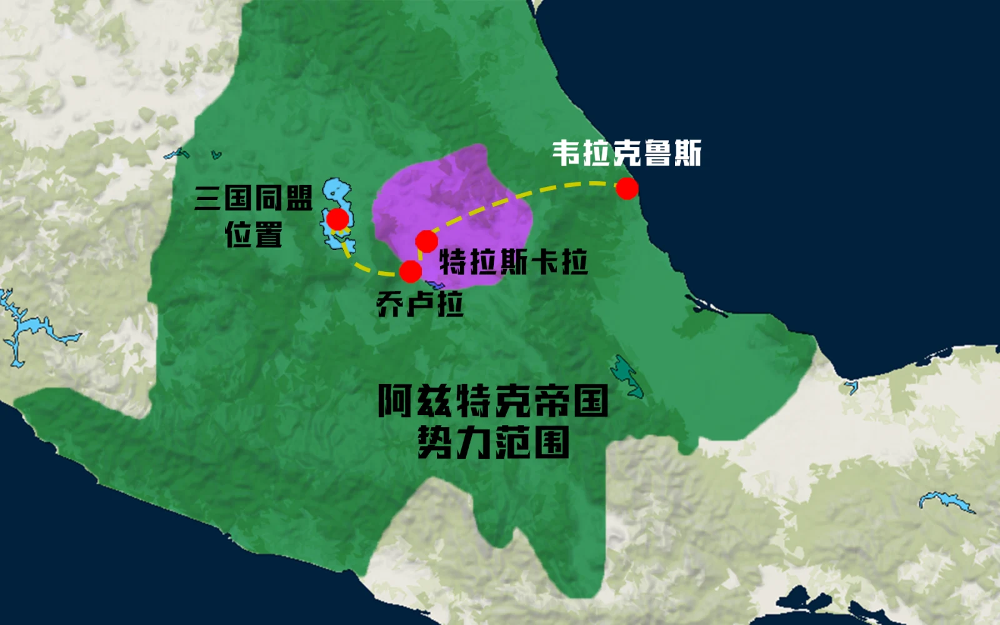
10语言作为生存方法
在玛雅语世界生活多年后，她掌握当地语言。学习语言可以是适应，也是被迫生活留下的技术。
语言先救她活下去，后来也被战争征用。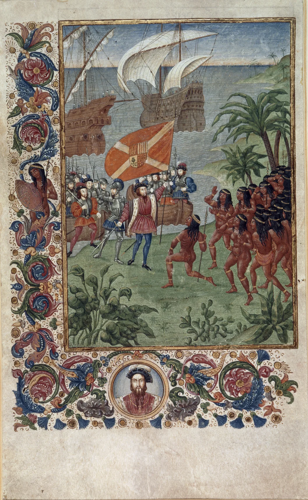
111519 · 西班牙人登陆
科尔特斯率领一支规模不大的远征队抵达玛雅世界。船、马、钢铁与火器制造了巨大的军事冲击， 但此后改变战争的还有数以千计的原住民盟军。
当地军队在冲突后求和；这不是马琳切可以决定的战争。
她与另外十九名女性被作为“礼物”交给胜利者，本质上仍是被转交。
新名字“玛丽娜”没有自动带来自由，也没有抹去她的奴役处境。
当队伍进入纳瓦特尔语区，她能把纳瓦特尔语转成玛雅语，因而成为不可替代的翻译者。
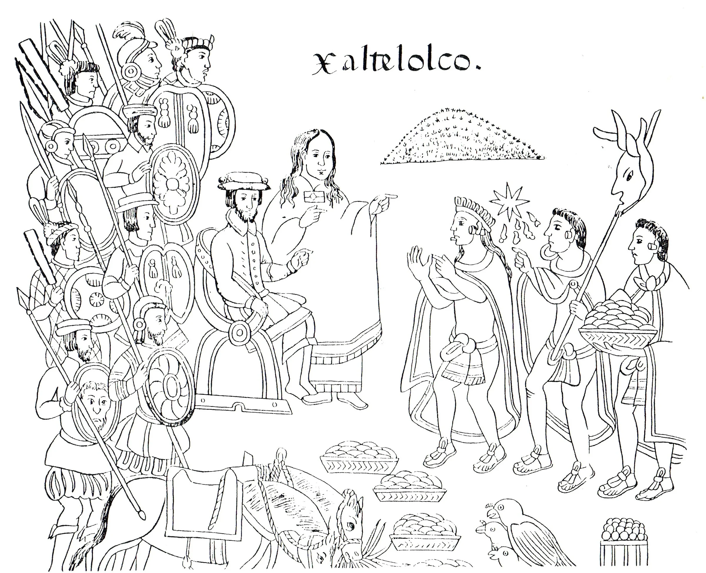
12受洗 · 命名
受洗把她纳入西班牙基督教秩序，“Doña”又暗示她被承认为有地位的女性。但尊称没有取消依附与不自由。
13翻译链
每个词都带着无法直接替换的政治含义。
纳瓦特尔语 → 玛雅语 → 西班牙语
征服者的概念通过她进入另一个政治宇宙。
14“Malinche”的诞生
“Malintzin”的敬称被西班牙耳朵转写为“Malinche”。在某些记录里， 科尔特斯也因总与她共同出现而被称作“马琳切的领主”。
共同完成的政治行动，最后变成一个女人单独承担的历史符号。
先理解他们从哪里来、如何学会殖民、又带着怎样一支队伍登陆， 才能看清科尔特斯如何把地方冲突放大为殖民战争。
这句话忽略原住民盟军、既有政治冲突、疫病、补给与翻译网络，也把漫长过程压成一个英雄故事。
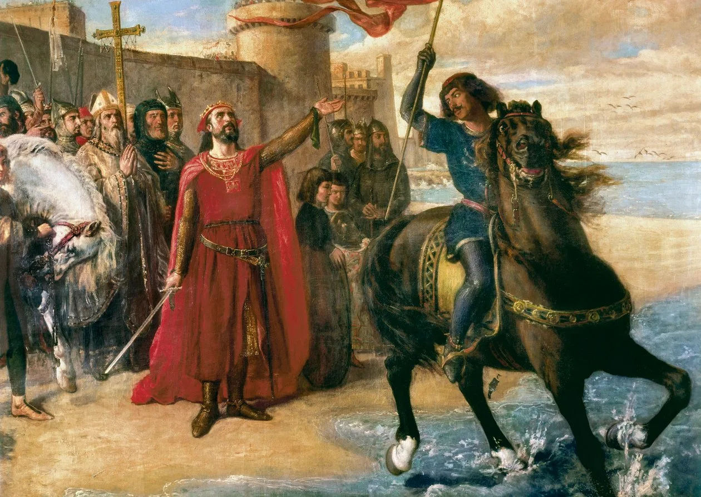
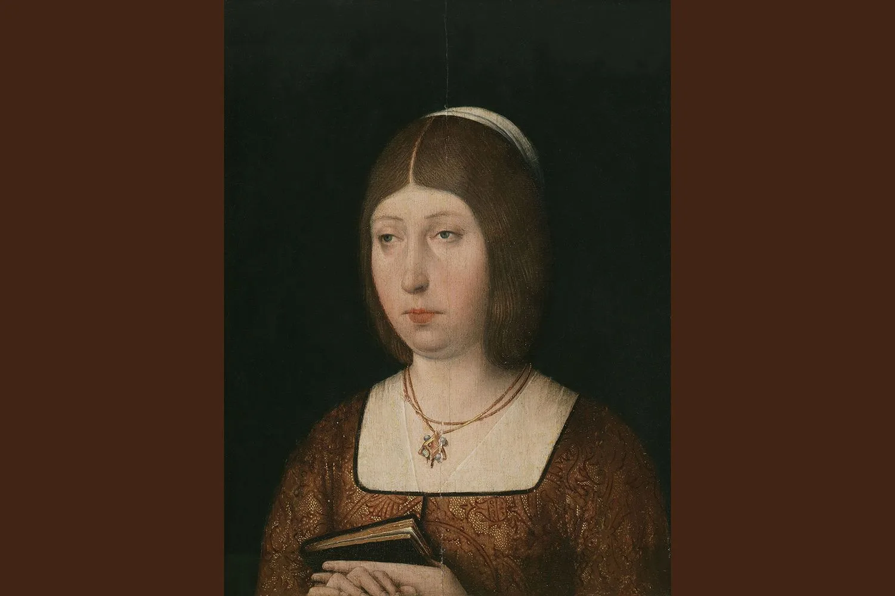
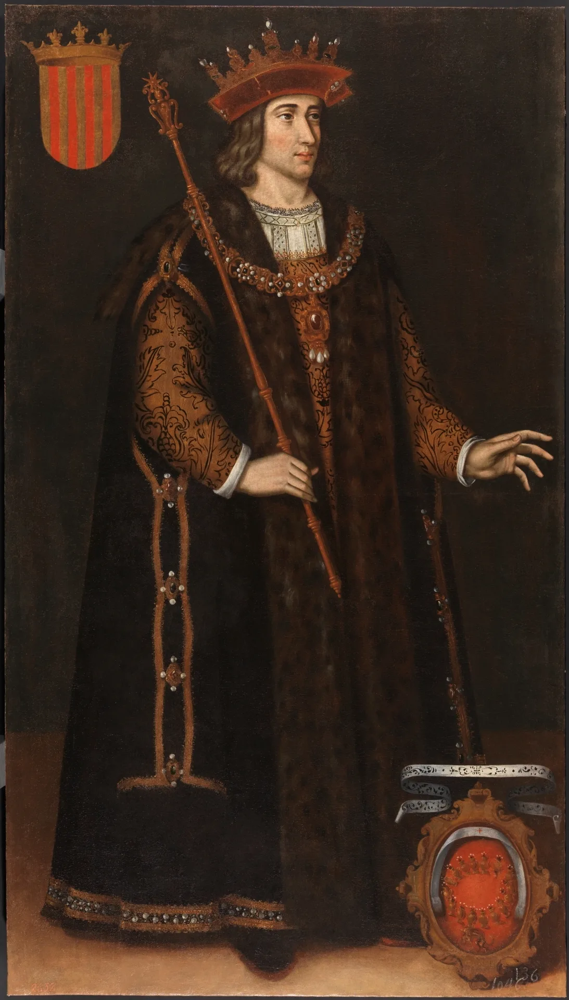
16伊比利亚 · 1492 前后
卡斯蒂利亚与阿拉贡的王权结盟，并在格拉纳达陷落后结束长期的伊比利亚战争。 军事扩张、宗教统一与王权竞争没有消失，而是更快地转向海洋。
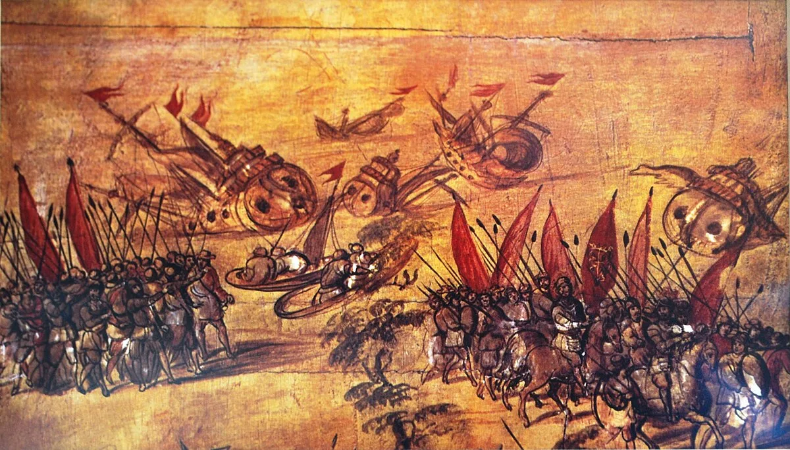
17加勒比 · 殖民试验场
伊斯帕尼奥拉与古巴的殖民据点，让远征者熟悉了强迫劳动、夺取资源、建立据点与利用地方竞争。 科尔特斯也在加勒比殖民社会中积累人脉、财富与政治经验。
他不是从欧洲社会直接走进一片“未知荒野”，而是从一个已经运转的殖民网络出发。
历史事实具体暴力与制度在不同岛屿、时期并不完全相同；这里说明的是经验和网络，而非一条不可避免的命运。
181519 · 科尔特斯远征
数百名西班牙人不足以单独征服中部墨西哥。他们的力量来自武器，也来自把地方人力、情报与补给接入远征。
规模有限，并且持续面临补给、疾病与内部权力冲突。
制造冲击和战术优势，但这些物件不会自动带来胜利。
真正放大队伍的，是每到一地重新结成的关系网络。
马琳切的重要性正在这里出现：她不是武器，而是让陌生政治世界能够被询问、试探与谈判的人。
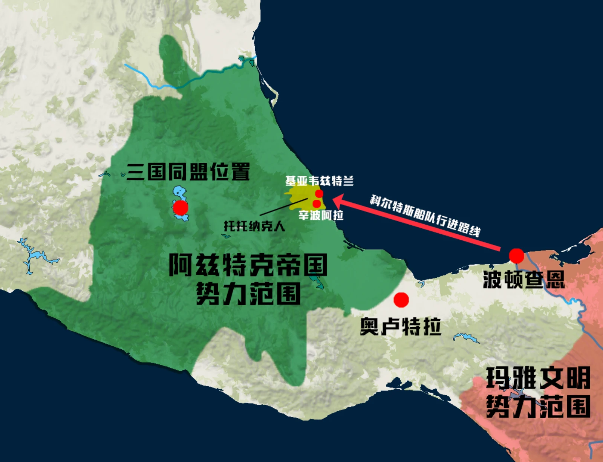
19韦拉克鲁斯 · 托托纳克
受三城同盟贡赋压力的托托纳克政治领袖，把新来者视为可能改变力量平衡的伙伴。 他们是在既有冲突中行动。
马琳切让不满变成承诺，让承诺变成兵力、补给与路线。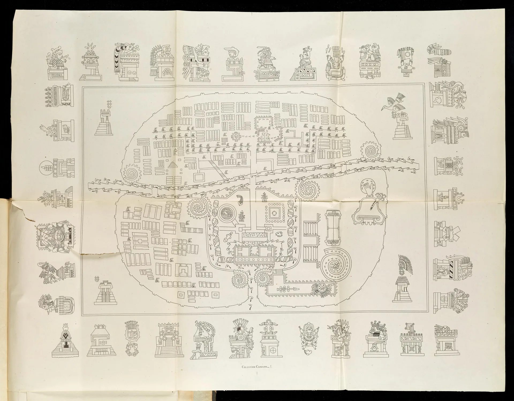
20特拉斯卡拉 · 是什么
特拉斯卡拉是由多个政治中心共同构成的强大政体。它与墨西加人同属纳瓦语世界， 却长期保持独立，并在三城同盟的包围与贸易压力下持续对抗。
共同语言不等于共同国家，也不自动产生政治忠诚。
它不是等待“解放”的空白，而是有自身领袖、军队与目标的行动者。
没有特拉斯卡拉等原住民盟军，几百名西班牙人无法独自完成征服。
21特拉斯卡拉 · 为什么先战后盟
一支来历不明的武装力量进入领地，首先引发的是抵抗。数周冲突后， 双方才在损失、技术差距与共同敌人的现实中重新计算利益。
陌生军队进入领地；特拉斯卡拉首先以战斗回应威胁。
西班牙军队一度濒临崩溃，同时以骑兵袭击周边村庄制造压力。
马琳切传达威胁、停战条件与联盟提议，让谈判成为可能。
对墨西加的长期敌意与现实利益压过暂时冲突；这是政治计算，不是民族背叛。
22乔卢拉 · 是什么
乔卢拉是重要的宗教与贸易中心，以羽蛇神信仰和巨型金字塔闻名。 它位于通往特诺奇蒂特兰的路线上，与墨西加政治网络关系密切； 西班牙—特拉斯卡拉联军进入这里，本身就是一次高度紧张的政治行动。
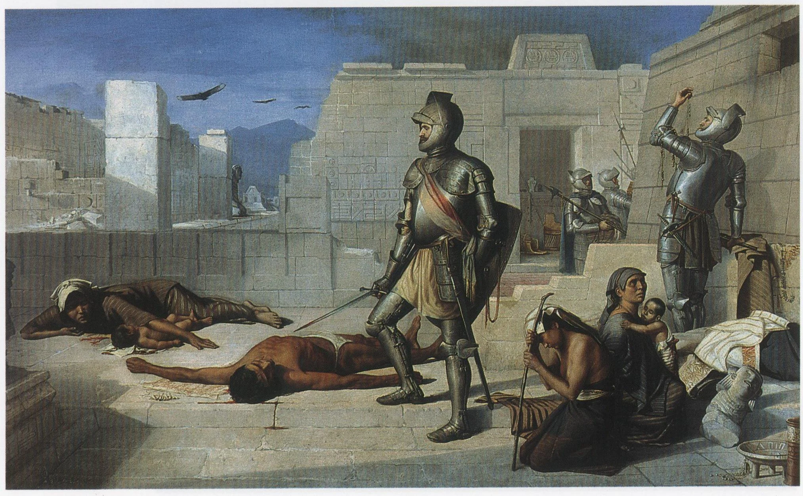
23乔卢拉 · 发生了什么
联军在城中发动大规模杀戮。科尔特斯声称自己发现了伏击；特拉斯卡拉叙述强调旧怨与使者受辱； 后来的墨西加叙述则把责任归向特拉斯卡拉。各方都在为自身行动组织理由。
据称，一位乔卢拉女性向她透露伏击计划。但故事来自征服者叙述，可能也承担为“先发制人”暴力辩护的功能。
她是否、如何获得警告，以及信息影响多大，都需来源批判；发动并实施屠杀的决定仍属于持有军事指挥权的人。
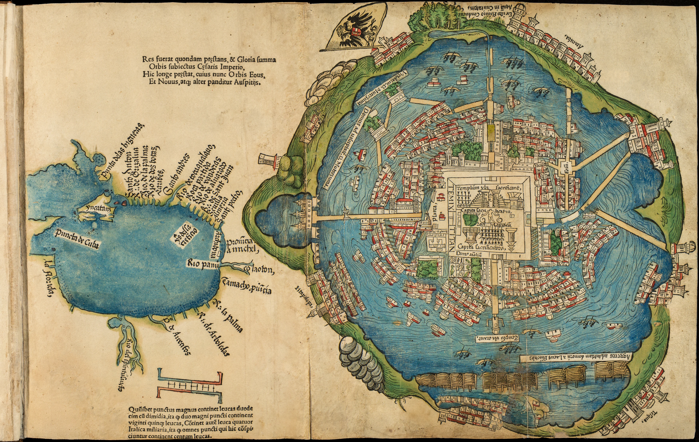
24湖上的堤道
1519 年 11 月，西班牙人与数量更多的原住民盟军沿堤道进入特诺奇蒂特兰。
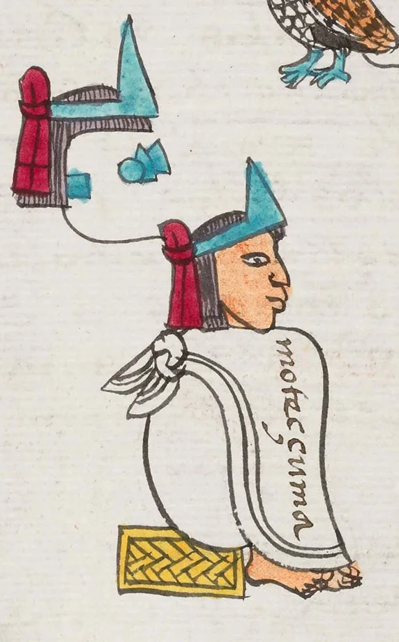
251519 年 11 月 8 日 · 相遇
蒙特苏马以外交礼仪迎接来者；科尔特斯带着王权与占有的主张进入。礼物、称谓、主权声明与威胁都要穿过翻译链。
她能解释话语，却不能让双方共享同一套政治规则。她对蒙特苏马、科尔特斯或这座城市的私人感受无人知晓。
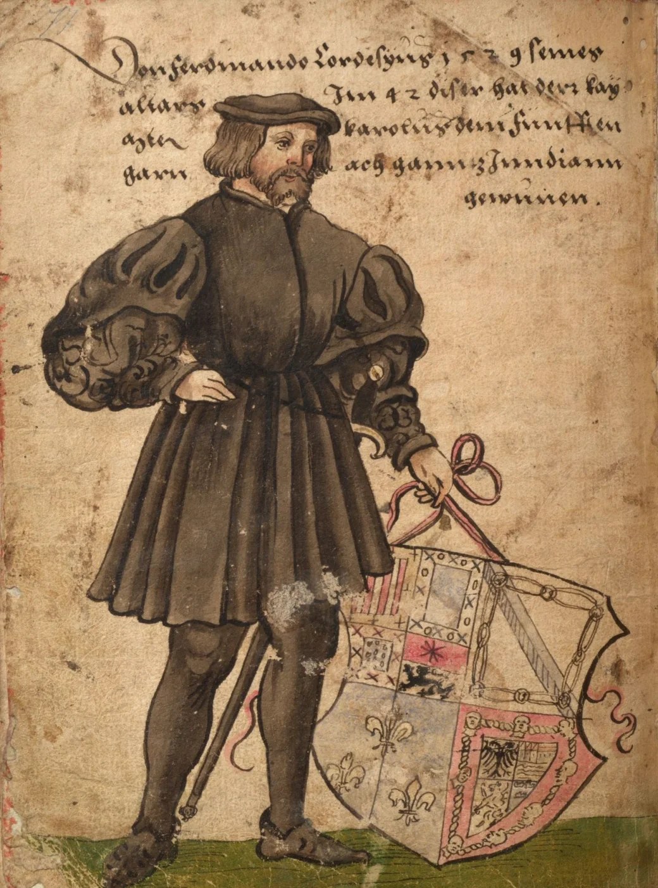
26黄金 · 神庙 · 软禁
西班牙人追问黄金、冲击宗教空间，并把蒙特苏马控制在自己手中。
马琳切继续翻译命令、要求与解释。她的能力扩大了西班牙人的行动范围，也让她更深地卷入暴力。
承认她的作用，不等于把决定战争的人从责任中移走。27从宾客到占领者
蒙特苏马一方用礼物、住处与外交仪式管理来客；科尔特斯一方则不断索取黄金、 介入宗教空间并软禁统治者。冲突不是突然“误会”出来的，而是在武装占领中不断累积。
双方仍能交换言辞与礼物，但共享词语不等于共享规则。
软禁蒙特苏马后，翻译开始更多服务于命令、索取与威胁。
城市并非被动等待；政治压力与宗教暴力终于触发公开反击。
能把命令翻译出来，不等于拥有下达或撤回命令的权力。
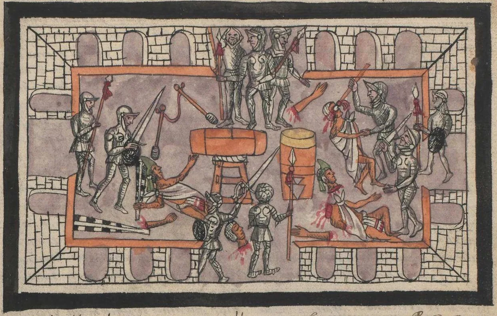
281520 · 托斯卡特尔节
科尔特斯前往海岸处理另一支西班牙军队，把城内指挥权交给佩德罗·德·阿尔瓦拉多。 宗教节庆进行时，西班牙士兵封锁出口并袭击参与者。
西班牙叙述常声称发现袭击计划，原住民叙述则强调无武装庆典遭到突袭。动机仍有争议，但阿尔瓦拉多部队发动大规模杀戮并不因争议消失。
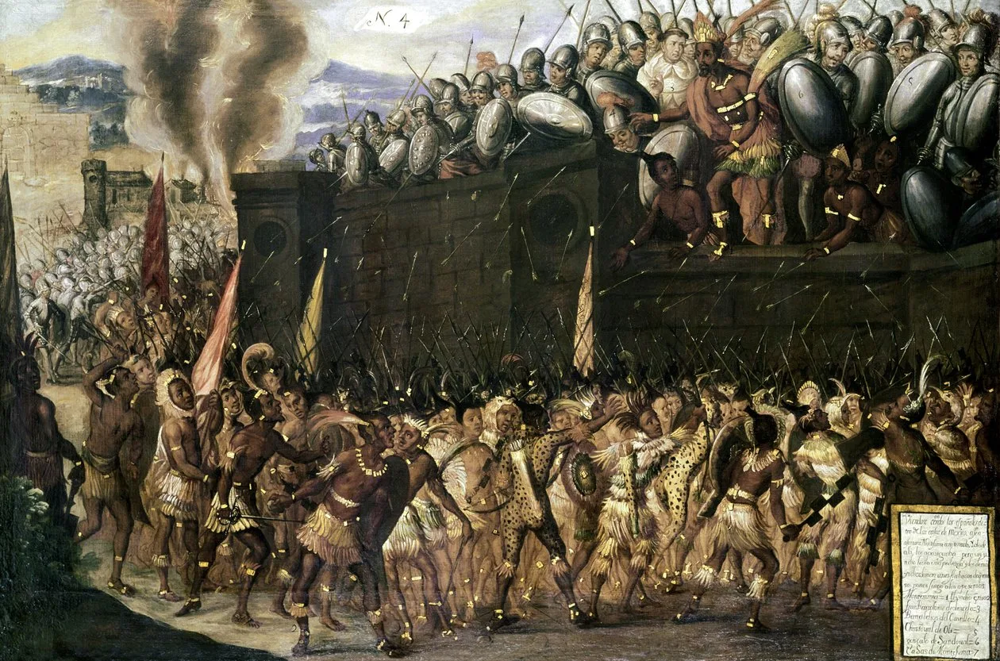
29反击 · 调停失败
杀戮后，特诺奇蒂特兰全面反击。西班牙人试图让被控制的蒙特苏马出面平息局势， 但他的政治权威已经破裂；关于他如何受伤、如何死亡，原住民与西班牙记录互相冲突。
话语可以被传达，调停条件也可以被解释。
当说话者失去信任，准确翻译也无法恢复被武力摧毁的秩序。
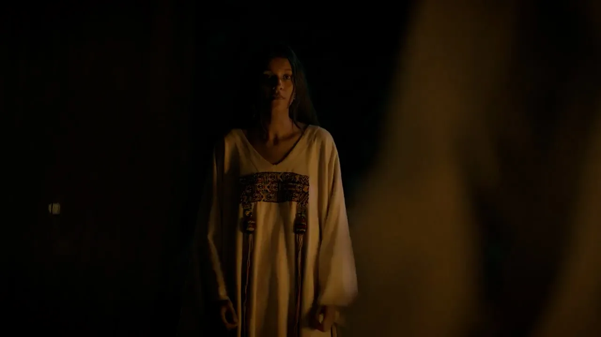
30翻译者的边界
马琳切仍在翻译、传递消息、参与谈判，也因此真实地帮助西班牙人的行动更有效。 但祭典杀戮、囚禁与撤军的军事决定，由掌握武装和指挥权的人作出。
作用，不等于主权；参与，不等于唯一责任。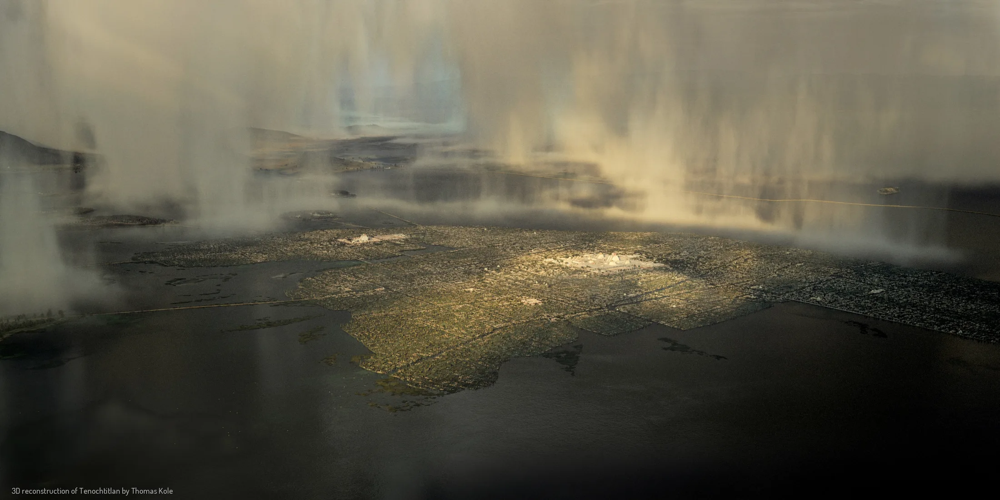
311520 年 6 月末 · 悲痛之夜
西班牙人与盟军试图趁夜沿堤道撤离。城市守军反击，队伍在狭窄通道上拥挤溃散； 许多人死于战斗、负重、踩踏或溺水。马琳切活了下来。
这不是战争的结束，只是力量重新集结前的一次崩溃。败退者在特拉斯卡拉重整，新的欧洲援军、更多原住民盟军、天花与湖上战术一起改变了力量平衡。
最后围攻这座城市的，绝不只是几百名欧洲人。
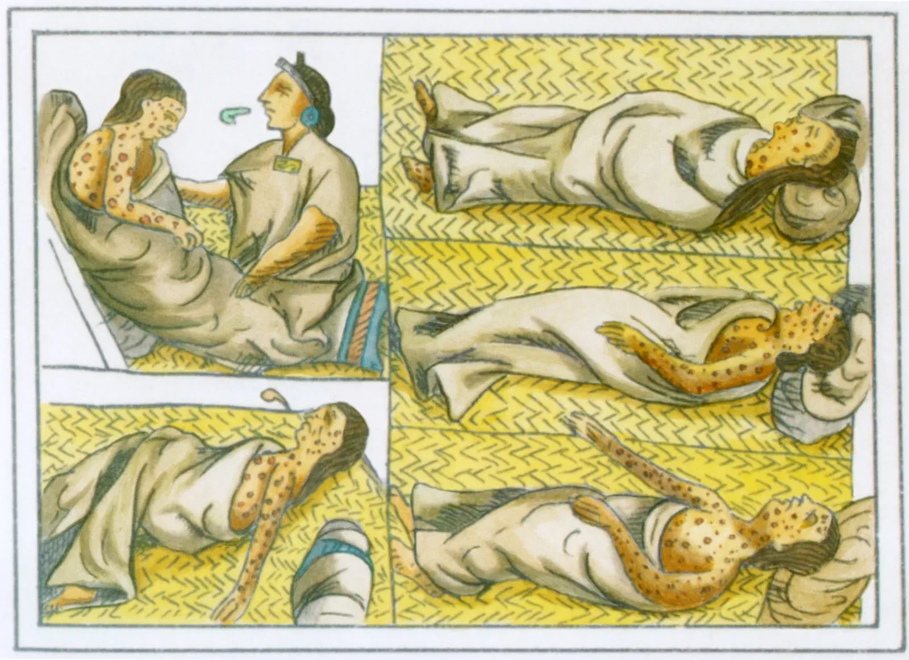
331520—1521 · 疫病与重整
天花在中部墨西哥传播，造成大规模死亡并扰乱政治与军事组织。与此同时， 科尔特斯在特拉斯卡拉获得庇护、补给与盟军，并吸收了原本来逮捕他的西班牙士兵。
疫病极其重要，却没有独自“攻下”城市；盟军、封锁、火力、饥饿和持续作战共同造成结果。
34湖上战争 · 十三艘双桅帆船
木料与部件被运到湖边组装成十三艘双桅帆船。它们与独木舟、岸上盟军和堤道攻势配合， 让西班牙—原住民联军能够切断湖上交通，并反复攻击城市边缘。
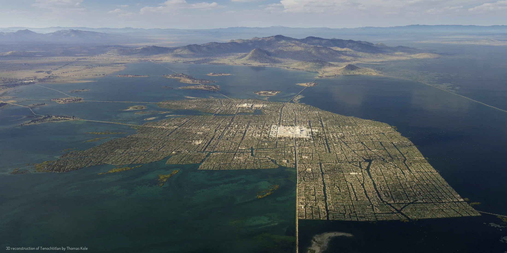
351521 年春夏 · 多月围攻
联军逐区推进，又反复遭遇反击。围城不是一场决斗，而是对城市生活条件的系统压缩。
渡槽、独木舟路线与湖面交通被攻击。
外围城镇与补给通道被逐步切断。
三条堤道成为拉锯战场，缺口不断被填平又挖开。
疾病、饥饿与持续战斗同时消耗军民。
马琳切继续参与翻译与谈判；她帮助征服更有效地发生，但没有指挥舰船、盟军或围城部署。
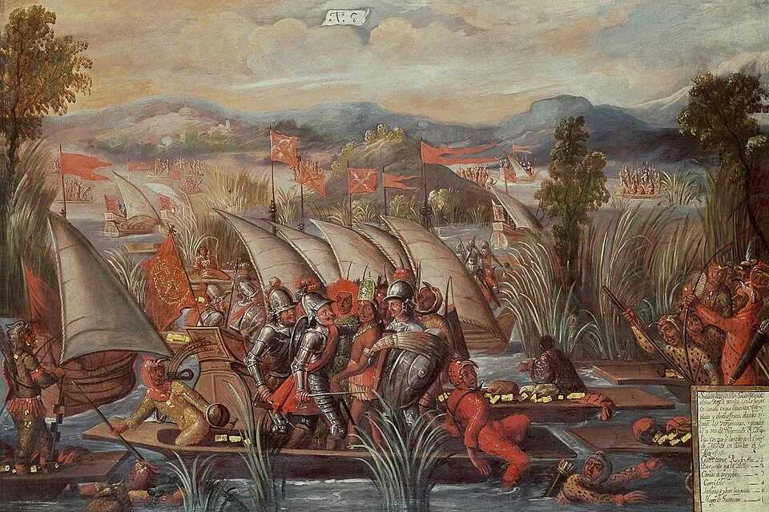
361521 年 8 月 13 日 · 瓜乌特莫克被俘
瓜乌特莫克接手抵抗后，守军继续在饥饿、疾病与废墟中作战。双方多次交换信息， 但投降条件没有形成共同接受的秩序。最后，他在湖上撤离时被俘。
翻译能让条件被听见，却不能替双方制造可以接受的世界。
特诺奇蒂特兰的陷落是殖民统治的开端，不是暴力的终点。
37战争以后
继续参与远征与外交
拥有财产
生育子女
与胡安·哈拉米约成婚
她与科尔特斯的关系不能只写成爱情，也不能只用现代的单一关系词概括。权力、性别、依附、策略与生存彼此纠缠。
她何时去世、因何去世，史料众说纷纭。晚年不是一个已经被完整找回的结局。
幸存不是自由的同义词。能动性与强迫可以同时存在。上下集在此直接播放；站内其他位置不使用视频封面。
38Malinchismo
数百年后，“malinchismo”被用来指责崇洋、出卖本国与否定自身文化。 一个十六世纪的原住民女性，被放进后来才形成的民族国家想象里受审。
她的语言、信息与外交工作帮助了征服，也使殖民暴力更有效地推进。
她先被奴役、被转交；后世又把共同历史创伤压在她一个人身上。
39重新阅读
为什么殖民者的决策常被解释为政治，而女性的生存策略却被解释为道德缺陷？
不把所有地方群体抹成同一个阵营，也不让殖民暴力因内部联盟而失去名字。
她是在强迫、机会、危险与不完整选择之间行动的人。
40把问题留给读者
这里没有唯一正确选项。选择只改变下方的阅读回应，不会被保存或发送。
选择一个角度，继续检视“责任”与“选择”之间的距离。
来源与证据边界
21 页中文原稿《马琳切：谁背叛了背叛者？》，按八章组织；两份中文字幕稿补充影像叙事。
本页使用来自 Gallica、Newberry Library 与 Wikimedia Commons 的公共领域图像，以及 Own Map 地图。
不连接分析服务，不设置跟踪 Cookie，不保存名字视角、地图选择或最终回应。